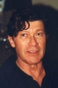
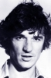
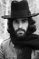

Country:United States, 117 minutes
Spoken languages:English
Genres:Documentary, Music
Director(s):Martin Scorsese
Writer(s):Mardik Martin
Video Codec:Unknown
Number: 635


Certification:PG
Storyline:
Martin Scorsese's documentary intertwines footage from "The Band's" incredible farewell tour with probing backstage interviews and featured performances by Eric Clapton, Bob Dylan, Joni Mitchell, Van Morrison, and other rock legends.
Cast:   

Medium: Original DVD,
Loaned: No
Aspect ratio: Unknown